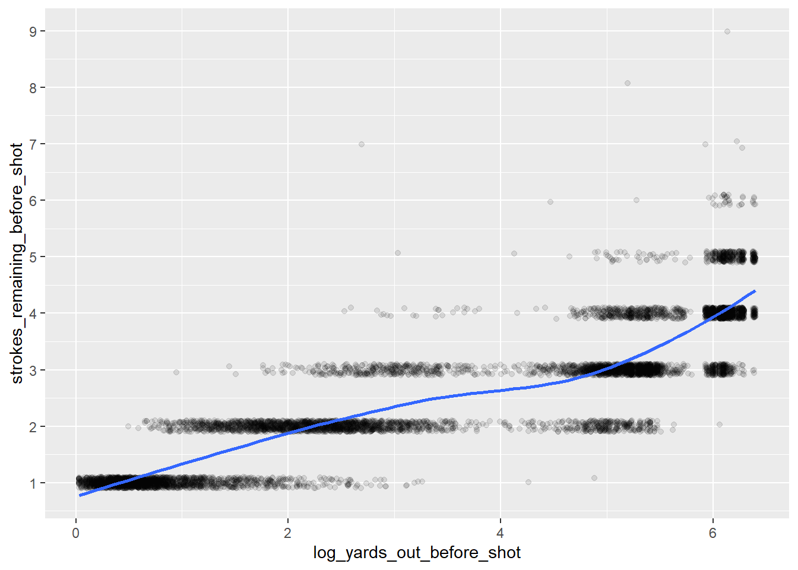

library(tidyverse)
library(tidymodels)Strokes Gained is an interesting method for evaluating golfers, co-created by Columbia Business School professor Mark Broadie.
Strokes Gained co-creator @markbroadie illustrates the statistic using Justin Thomas' final-round eagle at the 2021 #THEPLAYERS. üîé pic.twitter.com/LJ6qnp3ooE
— Golf Channel (@GolfChannel) March 8, 2023
From my understanding, Strokes Gained is similar to Expected Points Added (EPA) in football - golfers are evaluated against an “expected” number of strokes remaining after each shot. This “expected” value is based off a predictive model trained on historical data1. In this post, I’ll build my own Strokes Gained model using PGA ShotLink data. The model will use features in the shot-level data to predict how many strokes remaining the golfer has before the shot.
First, I’ll load the cleaned up data from my previous post.
shot_level <- readRDS("../02_shotlink_explore/shot_level.rds")
cut_colors <- readRDS("../02_shotlink_explore/cut_colors.rds")Before I start building a model, I want to get a better understanding of how penalties, drops, and provisionals are handled in the data. The shot_type_s_p_d column has this information (S = Shot, P = Penalty, D = Drop, Pr = Provisional).
#Filter to holes where player's had at least 1 penalty/drop/provisional
shot_level %>%
mutate(is_p_d = ifelse(shot_type_s_p_d == 'S',0,1)) %>%
group_by(player,
round,
hole) %>%
mutate(p_d_count = sum(is_p_d)) %>%
filter(p_d_count > 0) %>%
ungroup() %>%
arrange(player,
round,
hole,
shot) %>%
select(player,
round,
hole,
shot,
type = shot_type_s_p_d,
strokes = num_of_strokes,
yards_out = yards_out_before_shot,
to_location) %>%
as.data.frame() %>%
head(14) player round hole shot type strokes yards_out to_location
1 2206 2 18 1 S 1 238.00000000 Rough
2 2206 2 18 2 D 0 13.16666667 Rough
3 2206 2 18 3 S 1 15.11111111 Green
4 2206 2 18 4 S 1 1.16666667 Hole
5 6527 4 6 1 S 1 222.00000000 Water
6 6527 4 6 2 P 1 20.25000000 Other
7 6527 4 6 3 D 0 20.25000000 Other
8 6527 4 6 4 S 1 70.11111111 Green
9 6527 4 6 5 S 1 0.02777778 Hole
10 6567 1 6 1 S 1 215.00000000 Water
11 6567 1 6 2 P 1 13.27777778 Other
12 6567 1 6 3 D 0 13.27777778 Other
13 6567 1 6 4 S 1 73.36111111 Green
14 6567 1 6 5 S 1 3.66666667 HoleReviewing the sample above, it looks like the yards_out_before_shot column (which will probably be the best predictor of strokes remaining) is a little misleading for penalty drops. For example, t looks like Player 6527 went in the water off the tee on Day 4 6th Hole and had to take a penalty drop. The yards_out_before_shot value on the penalty and the drop is 20.25, but 70.11 on the first shot after the drop. This is probably because ShotLink is measuring to where the ball landed in the water, but Player 6527 had to drop where they entered the penalty area. For my model, I’ll filter down to actual shots, where shot_type_s_p_d = "S". Before I do that, I’ll add x_before_shot and y_before_shot columns which I’ll use later.
shots <- shot_level %>%
group_by(player,
round,
hole) %>%
arrange(player,
round,
hole,
shot) %>%
mutate(x_before_shot = lag(x),
y_before_shot = lag(y)) %>%
ungroup() %>%
filter(shot_type_s_p_d == 'S')Now I’ll take a look at how distance from the hole correlates to strokes remaining.
shots %>%
ggplot(mapping = aes(x = yards_out_before_shot,
y = strokes_remaining_before_shot)) +
geom_jitter(width = 0,
height = 0.1,
alpha = 0.25) +
geom_smooth(method = loess,
se = FALSE) +
scale_y_continuous(breaks = 1:10) +
theme_minimal()#Calculate R-Squared
cor(shots$yards_out_before_shot,
shots$strokes_remaining_before_shot)^2[1] 0.682005While there is a certainly a correlation between these numbers, the relationship is not quite linear. A log transformation should clean this up.
shots <- shots %>%
mutate(log_yards_out_before_shot = log(yards_out_before_shot+1))
shots %>%
ggplot(mapping = aes(x = log_yards_out_before_shot,
y = strokes_remaining_before_shot)) +
geom_jitter(width = 0,
height = 0.1,
alpha = 0.1) +
geom_smooth(method = loess,
se = FALSE) +
scale_y_continuous(breaks = 1:10) +
theme_minimal()
#Calculate R-Squared
cor(shots$log_yards_out_before_shot,
shots$strokes_remaining_before_shot)^2[1] 0.7876248The log transformation improves the R2 value, but it can probably be improved even further with a nonlinear model. To test this, I’ll use cross-validation to evaluate out-of-sample performance. Ideally, I’d like to use some type of time-series data splitting here to avoid any possible data leakage issues2, but I’ll use a simpler method in this post. To avoid over-fitting, I need to make sure I don’t include shot’s from the same golfer-hole in the training and hold-out data3. I’ll split the 30 golfers into 10 groups of 3, and hold out one of these groups in the cross-validation process.
player_cv_groups <- shots %>%
select(player) %>%
unique() %>%
arrange(player) %>%
mutate(cv_group = cut_number(x = player,
n = 10,
labels = FALSE))
shots <- shots %>%
inner_join(player_cv_groups,
by = "player")
shots %>%
group_by(cv_group) %>%
summarize(golfers = n_distinct(player),
shots = n())# A tibble: 10 × 3
cv_group golfers shots
<int> <int> <int>
1 1 3 834
2 2 3 840
3 3 3 832
4 4 3 834
5 5 3 820
6 6 3 835
7 7 3 839
8 8 3 845
9 9 3 834
10 10 3 835folds <- group_vfold_cv(data = shots,
group = cv_group)Now, using these folds, I’ll find a performance baseline using the linear model above.
just_log_yards_recipe <- recipe(formula = strokes_remaining_before_shot ~ log_yards_out_before_shot,
data = shots)
lm_mod <- linear_reg(mode = "regression",
engine = "lm")
lm_workflow <- workflow() %>%
add_recipe(just_log_yards_recipe) %>%
add_model(lm_mod)
lm_rs <- fit_resamples(object = lm_workflow,
resamples = folds)
lm_rs %>%
collect_metrics() %>%
select(.metric,
mean) %>%
as.data.frame() .metric mean
1 rmse 0.5569516
2 rsq 0.7900181As expected, the mean hold-out performance is very similar to the linear model fit on all the data.
Next I’ll try a gradient boosted tree model using the xgboost library. I love xgboost. It trains and tunes relatively quickly, and you don’t usually need to worry about other tedious pre-processing steps like centering, scaling, and imputing.
xgb_mod <- boost_tree(mode = "regression",
engine = "xgboost")
xgb_workflow <- workflow() %>%
add_recipe(just_log_yards_recipe) %>%
add_model(xgb_mod)
xgb_rs <- fit_resamples(object = xgb_workflow,
resamples = folds)
xgb_rs %>%
collect_metrics() %>%
select(.metric,
mean) %>%
as.data.frame() .metric mean
1 rmse 0.5237023
2 rsq 0.8142559The xgboost model improves performance without any parameter tuning, so I’ll stick with it for now.
Next, I’d like to add some more features. I’ll start with the ball location (fairway, green, etc.). I cleaned up ball location data in my last post, but those were the to_location columns. Here I need the from_location columns because I am using strokes_remaining_before_shot and yards_out_before_shot . Rather than clean these columns, I’ll use dplyr::lag() to grab the to_location from the previous shot.
shots <- shots %>%
group_by(player,
round,
hole) %>%
arrange(shot) %>%
mutate(from_location = lag(to_location)) %>%
ungroup() %>%
mutate(from_location = ifelse(shot == 1, 'Tee Box', from_location)) %>%
mutate(from_location = factor(from_location,
levels = c("Tee Box",
"Rough",
"Green",
"Fairway",
"Other",
"Bunker",
"Water",
"Hole")))
shots %>%
filter(player == 1810,
round == 1,
hole %in% 1:3) %>%
select(hole,
shot,
to_location,
from_location) %>%
arrange(hole,
shot) %>%
as.data.frame() hole shot to_location from_location
1 1 1 Rough Tee Box
2 1 2 Green Rough
3 1 3 Green Green
4 1 4 Hole Green
5 2 1 Green Tee Box
6 2 2 Hole Green
7 3 1 Fairway Tee Box
8 3 2 Green Fairway
9 3 3 Green Green
10 3 4 Hole GreenNow I’ll train a new xgboost model with this feature. I’ll switch back to using yards_out_before_shot instead of log_yards_out_before_shot since xgboost is nonlinear, it should not have much impact on model performance. Since I’ve updated the data set, I’ll need to recreate the fold index and the recipe.
folds <- group_vfold_cv(data = shots,
group = cv_group)
with_location_recipe <- recipe(formula = strokes_remaining_before_shot ~
yards_out_before_shot +
from_location,
data = shots) %>%
step_dummy(from_location)
xgb_mod <- boost_tree(mode = "regression",
engine = "xgboost")
xgb_workflow <- workflow() %>%
add_recipe(with_location_recipe) %>%
add_model(xgb_mod)
xgb_rs <- fit_resamples(object = xgb_workflow,
resamples = folds)
xgb_rs %>%
collect_metrics() %>%
select(.metric,
mean) %>%
as.data.frame() .metric mean
1 rmse 0.5166006
2 rsq 0.8192588Not much of an improvement, but the model got a little better
Next, I’d like to add a feature that uses the results of nearby shots.
round_hole_ids <- shots %>%
select(round,
hole) %>%
unique() %>%
arrange(round,
hole) %>%
mutate(round_hole_id = row_number())
get_knn_preds <- function(id = 1,
round_hole_ids,
shots) {
round_hole_shots <- round_hole_ids %>%
filter(round_hole_id == id) %>%
inner_join(shots,
by = c('round','hole')) %>%
filter(!is.na(x_before_shot)) %>%
select(player,
round,
hole,
shot,
cv_group,
x_before_shot,
y_before_shot,
strokes_remaining_before_shot)
# round_hole_shots %>%
# mutate(strokes_remaining_before_shot = factor(strokes_remaining_before_shot,
# ordered = T)) %>%
# ggplot(mapping = aes(x = x_before_shot,
# y = y_before_shot,
# color = strokes_remaining_before_shot)) +
# geom_point() +
# coord_equal() +
# theme_minimal()
knn_folds <- group_vfold_cv(data = round_hole_shots,
group = cv_group)
knn_recipe <- recipe(formula = strokes_remaining_before_shot ~
x_before_shot +
y_before_shot,
data = round_hole_shots)
knn_mod <- nearest_neighbor(mode = "regression",
engine = "kknn")
knn_workflow <- workflow() %>%
add_recipe(knn_recipe) %>%
add_model(knn_mod)
knn_rs <- fit_resamples(object = knn_workflow,
resamples = knn_folds,
control = control_resamples(save_pred = T))
rs_preds <- knn_rs %>%
collect_predictions() %>%
select(row_id = .row,
pred = .pred)
preds_join <- round_hole_shots %>%
as.data.frame() %>%
mutate(row_id = row_number()) %>%
inner_join(rs_preds,
by = "row_id") %>%
select(player,
round,
hole,
shot,
knn_pred = pred)
return(preds_join)
}
knn_preds_long <- round_hole_ids$round_hole_id %>%
map(.f = get_knn_preds,
round_hole_ids,
shots) %>%
bind_rows()
saveRDS(knn_preds_long, file = "knn_preds_long.rds")shots <- shots %>%
left_join(knn_preds_long,
by = c('player','round','hole','shot'))
shots %>%
ggplot(mapping = aes(x = knn_pred,
y = strokes_remaining_before_shot)) +
geom_jitter()folds <- group_vfold_cv(data = shots,
group = cv_group)
with_knn_recipe <- recipe(formula = strokes_remaining_before_shot ~
yards_out_before_shot +
from_location +
knn_pred,
data = shots) %>%
step_dummy(from_location)
xgb_mod <- boost_tree(mode = "regression",
engine = "xgboost")
xgb_workflow <- workflow() %>%
add_recipe(with_knn_recipe) %>%
add_model(xgb_mod)
xgb_rs <- fit_resamples(object = xgb_workflow,
resamples = folds)
xgb_rs %>%
collect_metrics() %>%
select(.metric,
mean) %>%
as.data.frame() .metric mean
1 rmse 0.5176478
2 rsq 0.8185528# nearby_shots <- shots %>%
# filter(!is.na(x_before_shot)) %>%
# select(player,
# cv_group,
# round,
# hole,
# shot,
# x_before_shot,
# y_before_shot,
# strokes_remaining_before_shot)
#
# nearby_shots_join <- nearby_shots %>%
# left_join(nearby_shots,
# by = "hole",
# suffix = c("_a","_b")) %>%
# filter(cv_group_a != cv_group_b) %>%
# mutate(dist_a_b = sqrt((x_before_shot_a-x_before_shot_b)^2 + (y_before_shot_a-y_before_shot_b)^2)) %>%
# mutate(dist_a_b = dist_a_b/3)
#
# nearby_shot_example = nearby_shots_join %>%
# filter(player_a == 1810,
# round_a == 1,
# hole == 1,
# shot_a == 2)
#
# nearby_shot_example %>%
# mutate(strokes_remaining_before_shot_b = factor(strokes_remaining_before_shot_b,
# ordered = TRUE)) %>%
# ggplot(mapping = aes(x = x_before_shot_b,
# y = y_before_shot_b,
# color = strokes_remaining_before_shot_b,
# size = 1/dist_a_b)) +
# geom_point() +
# coord_equal()
#
# nearby_shots_join %>%
# filter(dist_a_b <= 10) %>%
# mutate(weight = 1/dist_a_b) %>%
# mutate(weighted_strokes = weight*strokes_remaining_before_shot_b) %>%
# group_by(player_a,
# hole,
# round_a,
# shot_a,
# strokes_remaining_before_shot_a) %>%
# summarize(avg_strokes = mean(strokes_remaining_before_shot_b),
# total_weight = sum(weight),
# total_weighted_strokes = sum(weighted_strokes),
# .groups = "keep") %>%
# mutate(weighted_avg = total_weighted_strokes/total_weight) %>%
# ggplot(mapping = aes(x = weighted_avg,
# y = strokes_remaining_before_shot_a)) +
# geom_jitter()
#
# # nearby_shots_example <- nearby_shots_join %>%
# # filter(player_a == 1810,
# # round_a == 1,
# # hole == 1,
# # ) %>%
# # mutate(include = ifelse(dist_a_b <= 15,"yes","no"))
# #
# # nearby_shots_example %>%
# # ggplot() +
# # geom_point(mapping = aes(x = x_before_shot_b,
# # y = y_before_shot_b))
# #
# # subset <- nearby_shots_example %>%
# # filter(include == 'yes') %>%
# # arrange(dist_a_b) %>%
# # select(dist_a_b,
# # strokes_remaining_after_shot_b) %>%
# # mutate(weight = 1/dist_a_b) %>%
# # mutate(weighted_strokes = weight*strokes_remaining_after_shot_b)
# #
# # subset
# #
# # subset %>%
# summarize(avg_strokes = mean(strokes_remaining_after_shot_b),
# total_weight = sum(weight),
# weighted_strokes = sum(weighted_strokes)) %>%
# # mutate(weighted_avg = weighted_strokes/total_weight)
# #
# #
# # nearby_shots_join %>%
# # select(hole,)Footnotes
These methods have a major shortcoming in that they attribute the entire residual to a single golfer (or the teams involved). This could probably be corrected with a hierarchical/mixed model, but I’ll save that for a future post.↩︎
If I wanted to use this model to predict strokes remaining for future shot’s, I would want to make sure I’m not using future shots when training/evaluating my model.↩︎
If a player took a triple bogey on a hole, the model could look at the other shots for the player on that hole and see that there is likely going to be a higher score.↩︎